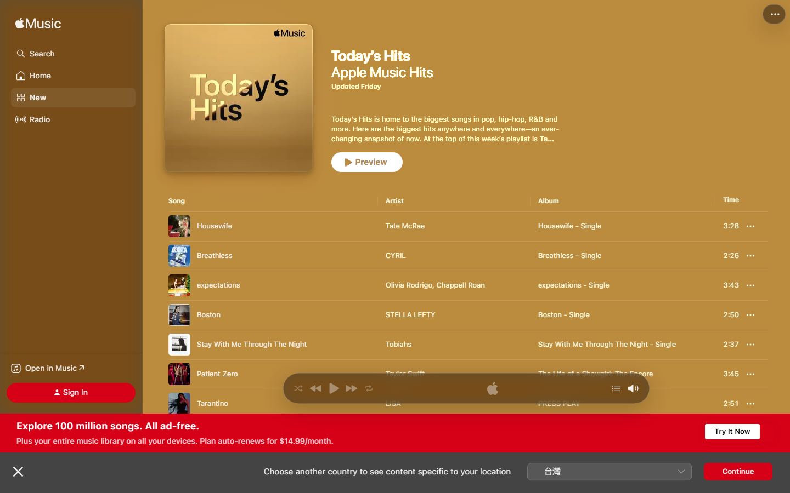

1認識 Coding Agent
09:00–09:45
1
認識 Coding Agent
09:00–09:45
D1 單元 01
09:00–09:45
認識
Coding Agent
本段完成看到讀檔、產出與操作
現在做這件事
觀察 Agent 讀取本機檔案、建立作品、執行指令與回報結果。
完成就打勾
操作提醒與延伸說明
先學會判斷成果與工具權限，四題體驗不代表所有工程任務。
以四題觀察不同能力，依固定條件比較結果，再把已確認需求整理成 PRD。操作細節集中在本講義，第一天不要求完整 SDD 文件。

只展開目前單元；四題提示詞需要時再讀。
練習使用獨立的 D1 資料夾，不放在 LeaveBot 或課程來源專案內。每題、每套模型／Harness 組合另開資料夾與新對話；不要把已完成作品或其他技能設定帶入空白起點。
D1 單元 01
09:00–09:45
本段完成看到讀檔、產出與操作
觀察 Agent 讀取本機檔案、建立作品、執行指令與回報結果。
先學會判斷成果與工具權限，四題體驗不代表所有工程任務。
D1 單元 02
09:45–10:30
本段完成在獨立練習資料夾啟動工具與作品
確認工具可登入、有額度；在獨立資料夾練習讀檔、開啟結果與停止操作。
YouTube：Harnesses in AI: A Deep Dive，AI Engineer 頻道，Tejas Kumar（IBM）主講；全長 20:26。課堂建議播放 03:00–05:59：03:00 定義、04:32 構成，05:59 起為示範。這是外部講座，需連網；不是課堂自製短片。唯讀探索提示詞。正式計時前備好工具，計時中不安裝套件。
D1 單元 03
10:45–12:30
本段完成分辨空間表達、互動流程、遊戲狀態與看圖復刻
10:45–11:45 依序體驗四題；11:45–12:30 對照各題結果，討論能與不能判斷的能力。
開啟四題測試。初始指令加一次固定追加，不把此流程稱為一次生成（one-shot）。
D1 單元 04
13:30–14:15
本段完成保存初始與固定追加後結果，記錄失敗
選一題重跑，完整套用共同規則與該題計時；開新資料夾、新對話，保存截止版本。
同題比較使用相同提示、素材與時限。除固定追加外的補充另記介入；截止後不手動改碼。
D1 單元 05
14:15–15:00
本段完成以同一題比較兩版差異
另開一輪教學比較，只改一項事先寫明的上下文，其餘條件相同；固定追加時點照舊。
上下文比較提示詞。本段是教學對照，不併入上午固定規格的評測結果。
D1 單元 06
15:15–16:30
本段完成留下通過項目、介入次數與修復證據
先凍結評測版本與紀錄，再另存練習副本，針對一個可重現問題嘗試修復。
修復練習提示詞。教學修復不回填原評分；由人操作驗收，不能計成 Agent 自主驗證。
這是 60 分鐘的課堂測試設計，尚無實測完成率或時間保證。每題同時比較相同設定的組合；每次結果只代表本次模型與 Harness 的共同表現。
教學設定：各題製作時間截止前 2 分鐘，同時發出固定追加要求。此時間為本次教學統一設定，非來源數據。
固定追加先由教師保留，到時才送出。學生工作資料夾不得預放追加提示詞、其他作品或本講義全文。能力比較要固定工具；若工具不同，結果只能說明整套組合的差異。
10:45 起計時。製作與操作分開；追加固定在製作截止前兩分鐘發送，不延長截止時間。
| 區間 | 活動 | 製作／操作分鐘 | 追加時間 | 製作截止 |
|---|---|---|---|---|
| 00–05 分 | 規則與能力面向 | —／— | — | — |
| 05–13 分 | 鵜鶘 SVG | 5／3 | 10:53 | 10:55 |
| 13–25 分 | 無素材塔羅牌 | 8／4 | 11:04 | 11:06 |
| 25–39 分 | 太空射擊 | 9／5 | 11:17 | 11:19 |
| 39–55 分 | 音樂播放器復刻 | 10／6 | 11:32 | 11:34 |
| 55–60 分 | 比較與討論 | —／— | — | — |
請直接在目前的獨立資料夾建立作品，不要只提供計畫，不要提問。以可在瀏覽器開啟的本機 HTML、CSS、JavaScript 完成；不要建立後端或登入功能。 只使用題目提供的素材與目前已備好的本機工具。禁止 MCP、外部圖片或影片生成服務；不要搜尋或下載素材、字體、套件，不要讀取其他參賽版本或專案。前三題自行繪圖，第四題只能使用指定素材。 由教師計時，製作截止時由教師停止任務並保存當前版本。過程中只會收到一次固定追加要求，不要自行假設其內容。可以在截止前自行執行與修正；只回報真正做過的驗證，不宣稱未使用的工具已完成檢查。 完成時簡短回報：開啟方式、實際驗證項目、未完成或未驗證項目。
也可直接下載各題初始提示詞，檔案已包含此前綴；不要重複貼兩份。
主要觀察：視覺與空間表達。製作 5 分鐘，操作 3 分鐘。
不提供圖片，使用 HTML 與自行繪製的 SVG。
請直接在目前的獨立資料夾建立作品，不要只提供計畫，不要提問。以可在瀏覽器開啟的本機 HTML、CSS、JavaScript 完成；不要建立後端或登入功能。 只使用題目提供的素材與目前已備好的本機工具。禁止 MCP、外部圖片或影片生成服務；不要搜尋或下載素材、字體、套件，不要讀取其他參賽版本或專案。前三題自行繪圖，第四題只能使用指定素材。 由教師計時，製作截止時由教師停止任務並保存當前版本。過程中只會收到一次固定追加要求，不要自行假設其內容。可以在截止前自行執行與修正；只回報真正做過的驗證，不宣稱未使用的工具已完成檢查。 完成時簡短回報：開啟方式、實際驗證項目、未完成或未驗證項目。 建立一個可直接開啟的 HTML，使用自行繪製的 SVG，呈現一隻鵜鶘騎腳踏車。包含完整車架、兩個車輪、踏板與鵜鶘；車輪和踏板持續轉動，腳跟隨踏板移動。禁止使用外部圖片、影片或生成服務。畫面簡潔，主體清楚。
判讀限制：不代表整體工程能力或圖片理解能力。
外觀與功能分開記錄。追加結果選「修正完成／未完成修正／影響原有功能」，附重現步驟或畫面證據；不要只靠 Agent 的完成聲明。
主要觀察：需求理解與互動流程。製作 8 分鐘，操作 4 分鐘。
不提供牌面，自行以 SVG 繪製八張牌。
請直接在目前的獨立資料夾建立作品，不要只提供計畫，不要提問。以可在瀏覽器開啟的本機 HTML、CSS、JavaScript 完成；不要建立後端或登入功能。 只使用題目提供的素材與目前已備好的本機工具。禁止 MCP、外部圖片或影片生成服務；不要搜尋或下載素材、字體、套件，不要讀取其他參賽版本或專案。前三題自行繪圖，第四題只能使用指定素材。 由教師計時，製作截止時由教師停止任務並保存當前版本。過程中只會收到一次固定追加要求，不要自行假設其內容。可以在截止前自行執行與修正；只回報真正做過的驗證，不宣稱未使用的工具已完成檢查。 完成時簡短回報：開啟方式、實際驗證項目、未完成或未驗證項目。 建立繁體中文塔羅抽牌網站，採深藍、米白與少量暖金。使用 Rider–Waite–Smith 體系中的太陽、月亮、星星、隱者、魔術師、力量、正義、世界八張牌。自行以 SVG 繪製各牌的代表性圖像，不可只放名稱或 emoji。使用者輸入問題後，選三張不同的牌，翻面顯示牌名與簡短解讀；完成後可重新開始。禁止外部圖片、API 與生成服務。
判讀限制：不評專業插畫品質或預測準確性；不屬於圖片理解測試。
外觀與功能分開記錄。追加結果選「修正完成／未完成修正／影響原有功能」，附重現步驟或畫面證據；不要只靠 Agent 的完成聲明。
這是本課檢核方向，允許合理的簡化圖像；不要求像素級臨摹或專業插畫。初始題未提供參考圖，因此不能據此評圖片理解。
主要觀察：規則實作與狀態管理。製作 9 分鐘，操作 5 分鐘。
Canvas 與自行繪製的幾何圖形，不提供美術素材。
請直接在目前的獨立資料夾建立作品，不要只提供計畫，不要提問。以可在瀏覽器開啟的本機 HTML、CSS、JavaScript 完成；不要建立後端或登入功能。 只使用題目提供的素材與目前已備好的本機工具。禁止 MCP、外部圖片或影片生成服務；不要搜尋或下載素材、字體、套件，不要讀取其他參賽版本或專案。前三題自行繪圖，第四題只能使用指定素材。 由教師計時，製作截止時由教師停止任務並保存當前版本。過程中只會收到一次固定追加要求，不要自行假設其內容。可以在截止前自行執行與修正；只回報真正做過的驗證，不宣稱未使用的工具已完成檢查。 完成時簡短回報：開啟方式、實際驗證項目、未完成或未驗證項目。 建立單頁太空射擊遊戲，使用 Canvas 與自行繪製的圖形。方向鍵移動、空白鍵射擊；敵人從上方出現，被擊中後消失並加分。玩家三格生命，受傷後短暫無敵；存活 30 秒獲勝，生命歸零失敗。提供開始、結果與重新開始畫面。禁止外部圖片、音訊與生成服務。
判讀限制：不代表複雜遊戲開發能力或完整棋規實作能力。
外觀與功能分開記錄。追加結果選「修正完成／未完成修正／影響原有功能」，附重現步驟或畫面證據；不要只靠 Agent 的完成聲明。
主要觀察：圖片理解與視覺還原。製作 10 分鐘，操作 6 分鐘。
固定 1440 × 900 Apple Music 原站 reference.png、根目錄 tracks.json 與 assets 內三張 800 × 800 PNG 封面；不需音訊。
下載 Music Player 固定測試素材 ZIP，解壓到本題的空白資料夾。根目錄有 reference.png 與 tracks.json；assets 內有 cover-01.png 至 cover-03.png 三張封面。不需音訊，兩套系統必須使用同一份 ZIP。不要把原始包的 PROMPT.txt 或教師追加提示提前放進受測資料夾。

使用 Studio Music 品牌、Studio Sessions 歌單與三首虛構歌曲。截圖決定側欄、歌單、欄位比例與播放區位置；tracks.json 決定曲名、歌手、時長與封面。忽略原圖中的真實歌曲、登入、地區提示及訂閱廣告，不連 Apple Music API。參考網址僅供教師查核，受測 Agent 使用已提供的固定截圖，不讀取原站程式。
根目錄原始 Music_Player_Demo_Assets 保留供教師查考；本頁 ZIP 已整理成可直接使用的測試輸入。原創 PNG 封面與虛構歌曲資料、Apple 截圖分開註明來源與權利。來源與使用說明 · 固定截圖來源紀錄
請直接在目前的獨立資料夾建立作品，不要只提供計畫，不要提問。以可在瀏覽器開啟的本機 HTML、CSS、JavaScript 完成；不要建立後端或登入功能。 只使用題目提供的素材與目前已備好的本機工具。禁止 MCP、外部圖片或影片生成服務；不要搜尋或下載素材、字體、套件，不要讀取其他參賽版本或專案。前三題自行繪圖，第四題只能使用指定素材。 由教師計時，製作截止時由教師停止任務並保存當前版本。過程中只會收到一次固定追加要求，不要自行假設其內容。可以在截止前自行執行與修正；只回報真正做過的驗證，不宣稱未使用的工具已完成檢查。 完成時簡短回報：開啟方式、實際驗證項目、未完成或未驗證項目。 請根據 reference.png 的 Apple Music 原站截圖建立單頁音樂播放器。截圖決定版面、欄位比例、側欄與播放區位置；根目錄 tracks.json 決定歌曲文字、時長與封面，封面位於 assets/cover-01.png 至 cover-03.png。 只顯示三首虛構歌曲，歌單名稱為 Studio Sessions，品牌名稱為 Studio Music；歌單大封面使用第一首封面。沿用截圖的暖色布局與視覺層級，不複製真實歌曲、登入、地區提示或訂閱廣告，不重建整站。 必要功能：點擊選歌、播放／暫停、上一首／下一首循環切換、進度條拖曳與時間顯示；歌曲結束自動切下一首。只模擬播放進度，不需要音訊，不連接 Apple Music API。 只使用提供的 reference.png、tracks.json 與 assets 內素材。不使用 MCP、外部素材或生成服務，不讀取原站程式；不能將整張參考圖當作介面背景。請直接寫入可執行的 HTML、CSS、JavaScript，並回報開啟方式與實際驗證項目。
判讀限制：不代表原創設計品味或素材生成能力。
外觀與功能分開記錄。追加結果選「修正完成／未完成修正／影響原有功能」，附重現步驟或畫面證據；不要只靠 Agent 的完成聲明。
每題分別記錄需求符合程度、功能完成度、細節品質：0 未達成、1 部分達成、2 達成。先依該題的操作要求判斷，再補上具體觀察，不跨題硬比外觀。未完成也保留結果。
同時記錄模型、Harness、版本、權限、首次可用時間、固定追加後結果與非預定介入。不要把教師統一操作當成 Agent 自主驗證；違反素材或工具規則的結果另註，不能與合規版本直接排名。
課前可每題重跑至少三次，觀察變動並保留所有結果；少量展示仍不足以概括模型優劣。本課四題也不涵蓋長時間任務、後端工程、搜尋查核或正式環境可靠性。
下載空白測試紀錄。下午另存副本後的教學修復，不更改上午截止評分。